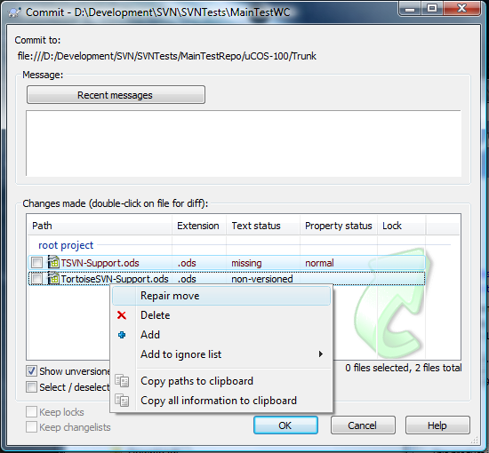
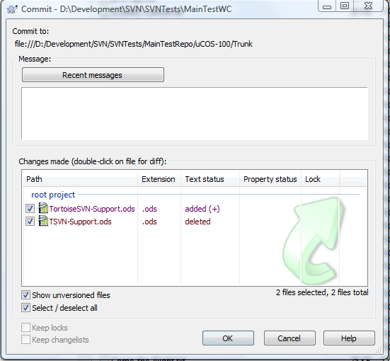

Repair moves/renames
$ADSENSE_TOP$Moving and renaming versioned files inside a working copy must always be done with the corresponding Subversion/TortoiseSVN commands. A move/rename without those (e.g., with the Windows Explorer) leads to problems since Subversion doesn't know that you have moved/renamed the files.
For example, if you rename a file named myfile.txt to myfile2.txt without using the Subversion/TortoiseSVN command, myfile.txt will show up as "missing" and myfile2.txt as "non-versioned" in the commit dialog or the Check-For-Modifications dialog.
If that happens to you, TortoiseSVN offers you an easy way to correct this. The following screenshot shows how the file TSVN-Support.ods was renamed to TortoiseSVN-Support.ods without the proper commands. They show up in the commit dialog as "missing" and "non-versioned". In the commit (or the Check-For-Modifications) dialog, you can select both files (Ctrl-click), right-click and choose "Repair move" from the context menu:

The "Repair move" command only works if exactly two files are selected, one having the "missing" and the other the "non-versioned" status. Only that way TortoiseSVN can find out which file got renamed to which file. By executing the command, TortoiseSVN repeats the rename but using the proper Subversion move/rename command:
